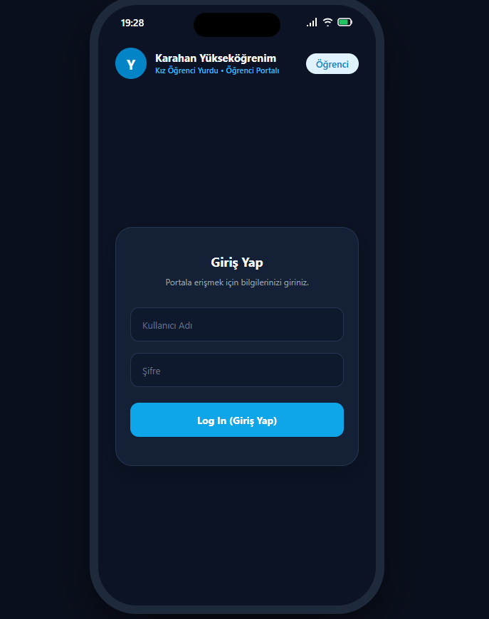
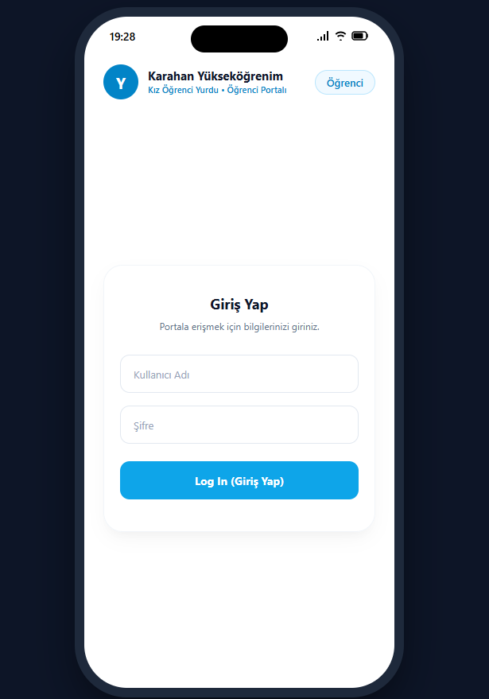
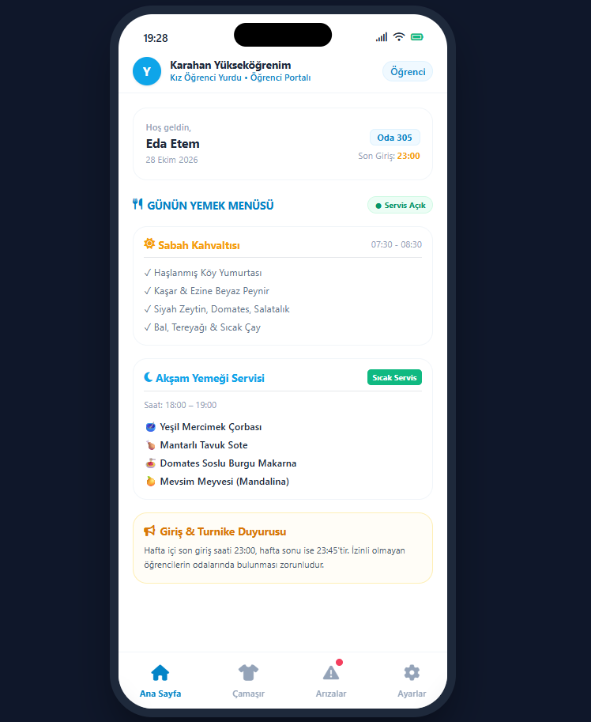
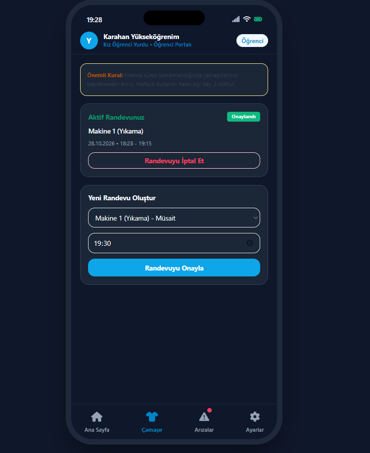
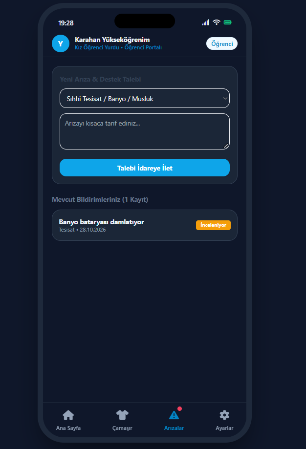
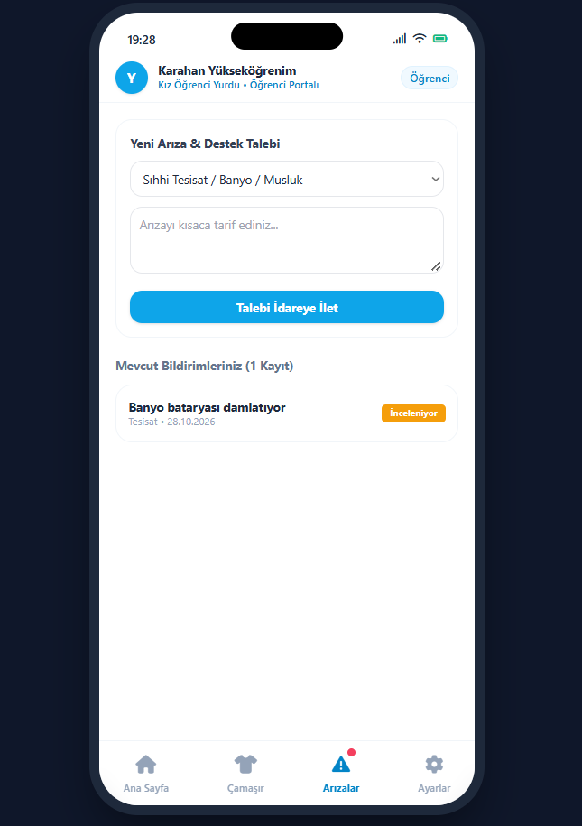

Prototip Değerlendirme Dokümanı - Yurtify Uygulaması
Prototip Oluşturma ve Değerlendirme Özeti
Bu çalışma, özel öğrenci yurtlarının günlük yönetimini ve yurt içi iletişimi kolaylaştırmak amacıyla geliştirdiğimiz Yurtify uygulamasının prototip test sonuçlarını içermektedir. Daha önce yaptığımız kullanıcı görüşmelerinde tespit ettiğimiz sorunları çözmek için mobil öncelikli, çalışan bir arayüz prototipi hazırladık. Bu prototipi, özel yurtlarda kalan 6 öğrenci ve 1 yurt yöneticisiyle birlikte test ettik.
Testler sırasında uygulamanın tüm temel özellikleri incelendi: İdare tarafından tanımlanan öğrenci hesaplarına güvenli giriş adımları, gece/gündüz kullanımına uygun Açık ve Koyu tema seçenekleri, günlük yemek menüsü, yurt idaresinin duyuru panosu, adil kullanımlı çamaşırhane randevu sistemi ve arıza talebi takip süreci. Kullanıcılardan aldığımız tüm geri bildirimler, karşılaşılan zorluklar ve uygulamayı geliştirmek için planladığımız adımlar aşağıda detaylandırılmıştır.
Prototip Görsel Mimarisi
Aşağıda, uygulamanın temel işlevlerini ve çift tema (Koyu/Açık Mod) özelliklerini yansıtan arayüz ekranları yer almaktadır. Ekran üzerindeki metinlerin rahatça okunabilmesi için optimize edilmiştir.









1. Kullanıcı Kimlik Doğrulama ve Sisteme Giriş (Sign-In)
Değerlendirme Soruları:- Yurt idaresi tarafından sisteme tanımlanan öğrencilerin ilk giriş (sign-in) yapma süreci ne kadar kolay ve anlaşılırdır?
- Giriş formunda istenen bilgiler (Kullanıcı Adı ve Şifre) hızlı ve pratik erişim için yeterli mi?
- Şifresini unutan veya giriş yaparken sorun yaşayan öğrenciler için yönlendirmeler açık ve anlaşılır mı?
- İdari Kayıt Kolaylığı: Öğrenci kayıtlarının yurt idaresi tarafından sisteme doğrudan eklenmesi, öğrencilerin kayıt olmakla vakit kaybetmesini ve sisteme mükerrer veya yetkisiz hesap açılmasını tamamen engelledi.
- Hızlı Giriş Süreci: Yalnızca kullanıcı adı ve şifre ile sisteme erişilmesi arayüzü son derece sade ve pratik kıldı.
- Geliştirme Önerisi: Öğrencilerin her girişte tekrar şifre yazmakla uğraşmaması için giriş ekranına "Beni Hatırla" seçeneği ve parmak izi / yüz tanıma (biyometrik giriş) desteği eklenmesi önerildi.
2. Genel Arayüz, Okunabilirlik ve Açık / Koyu Tema
Değerlendirme Soruları:- Menü yerleşimi, butonların büyüklüğü ve alt menü çubuğu rahat bir kullanım sunuyor mu?
- Ekranlardaki yazı boyutları ve tipografi tüm kullanıcılar için rahatça okunabiliyor mu?
- Açık ve Koyu tema seçenekleri gündüz ve gece ortamlarında gözü yormadan yeterli kontrastı sağlıyor mu?
- Kolay Gezinme: Sade kart düzeni ve alt menü çubuğu sayesinde öğrencilerin aradıkları bölümlere en fazla 1-2 dokunuşla ulaşabilmesi kullanım kolaylığı sağladı.
- Yazı Boyutu Uyarısı: Katılımcılar bazı kartlardaki ve açıklamalardaki yazı boyutlarının küçük olduğunu, okurken zorlandıklarını belirttiler; arayüz font boyutlarının büyütülmesi veya ayarlanabilir yazı boyutu seçeneği sunulması talep edildi.
- Tema Seçenekleri: Koyu Mod gece odalarda gözü dinlendirdiği için büyük beğeni topladı; Açık Mod gündüz saatlerinde rahat okuma sundu. Ayrıca sistem temasına otomatik uyum sağlayan bir ayar önerildi.
3. Günlük Yemek Menüsü ve Duyurular
Değerlendirme Soruları:- Sabah kahvaltısı ve akşam yemeği menüleri ile servis saatleri yeterince net gösteriliyor mu?
- Ana sayfadaki Duyuru Panosu, yurt yönetiminin paylaştığı güncel kuralları ve duyuruları takip etmek için kullanışlı mı?
- "Servis Açık" veya "Sıcak Servis" gibi yemek durumunu gösteren etiketler kolay anlaşılıyor mu?
- Net Menü Kartları: Kahvaltı ve akşam yemeğinin ayrı kartlar halinde servis saatleriyle gösterilmesi, öğrencilerin yemek saatlerini karıştırmasını ve personelle yaşanan belirsizlikleri ortadan kaldırdı.
- Duyuru Panosu: Ana sayfadaki panonun son giriş saati, sıcak su ve kalorifer duyurularını tek yerde toplaması çok faydalı bulundu; dağınık WhatsApp mesajlarının yerini başarıyla aldı.
- Geliştirme Önerisi: Beklenmeyen menü değişikliklerinde veya acil yurt duyurularında (su/elektrik kesintisi gibi) öğrencilerin telefonlarına doğrudan anlık bildirim (push notification) gönderilmesi talep edildi.
4. Çamaşırhane Randevu Sistemi
Değerlendirme Soruları:- Makine seçimi (Yıkama/Kurutma), tarih ve saat belirleyerek randevu alma adımları pratik mi?
- Haftalık kullanım hakkı (öğrenci başı 2 randevu) ve alınan randevular ekranda net görünüyor mu?
- Randevu alma ve gerektiğinde randevuyu iptal etme işlemleri kolayca yapılabiliyor mu?
- Adil Kullanım Kotası: Yıkama ve kurutma makinelerinin ayrılması ve haftalık 2 randevu kotası, makinelerin adil kullanılmasını sağladığı için tam not aldı.
- Genel Doluluk İhtiyacı: Öğrenciler, randevu ekranına girmeden önce çamaşırhanenin genel durumunu göremediklerini belirtti; ekranda tek bakışta "Kaç makine boş, kaçı çalışıyor?" gibi genel bir durum özetinin yer almasını talep etti.
- Geliştirme Önerisi: Randevuya zamanında gidilmesi için başlangıçtan 10 dakika önce hatırlatma bildirimi; çamaşırların makinede bekletilmemesi için ise yıkama/kurutma işlemi tam bittiği anda boşaltma bildirimi gönderilmesi istendi.
5. Arıza Talebi ve Takip Süreci (Maintenance Request)
Değerlendirme Soruları:- Belirlenen arıza kategorileri (Tesisat, Elektrik, İnternet, Mobilya vb.) yurtta karşılaşılan sorunları bildirmek için yeterli mi?
- Bildirilen arızanın hangi aşamada olduğu ("Açık", "İnceleniyor", "Çözüldü") kolayca takip edilebiliyor mu?
- Yönetici ekranı, arıza taleplerini incelemek ve durumunu güncellemek için personele kolaylık sağlıyor mu?
- Hızlı Bildirim: Kategorilere ayrılmış form üzerinden talep iletmenin, danışmaya gidip sözlü yazdırmaya göre çok daha hızlı olduğu görüldü.
- Durum Şeffaflığı: Arızanın hangi aşamada olduğunu gösteren renkli rozetler ("Açık", "İnceleniyor", "Çözüldü"), talebin idarece görüldüğünü ve işleme alındığını doğrulayarak güven verdi.
- Geliştirme Önerisi: Arıza onarıldıktan sonra kaydın kapatılması sürecinde, teknik kontrolün ardından yalnızca yetkili yöneticinin onay vererek kaydı sonlandırması yeterli ve pratik bir iş akışı olarak belirlendi.
Önerilen Mimari ve Arayüz İyileştirmeleri
1. Giriş İşlemleri ve Genel Deneyim:
- a. Giriş ekranına "Beni Hatırla" seçeneği ve parmak izi / yüz tanıma (biyometrik giriş) desteğinin eklenmesi.
- b. Arayüz genelindeki küçük yazı boyutlarının büyütülmesi ve okunabilirliği artıracak tipografi düzenlemelerinin yapılması.
- c. Cihazın işletim sistemi temasını otomatik takip eden "Sistem Temasıyla Eşle" seçeneğinin getirilmesi.
2. Yemekhane Yönetimi ve Duyurular:
- a. Beklenmeyen menü değişiklikleri ve acil yurt duyuruları (su/elektrik kesintileri vb.) için doğrudan telefonlara anlık bildirim (push notification) gönderilmesi.
3. Çamaşırhane Operasyonları ve Bildirimler:
- a. Öğrenci çamaşır ekranına anlık genel doluluk göstergelerinin (boşta ve çalışan makine sayıları) eklenmesi.
- b. Randevu saatinden 10 dakika önce hatırlatma bildirimi gönderilmesi.
- c. Yıkama veya kurutma programı tam bittiği anda çamaşırların makineden alınması için anlık bildirim iletilmesi.
4. Bakım Onarım ve Tesis Yönetimi:
- a. Arıza taleplerinin çözüm sürecinde, teknik kontrolün ardından yalnızca yetkili yöneticinin onayıyla kaydın güvenli ve hızlı şekilde kapatılması.
Ek: Prototip Ses Kayıtları ve Değerlendirme Tutanakları
Yurtify Uygulaması için özel yurtta kalan üniversite öğrencileri ve yurt yöneticisi ile yürütülen test görüşmelerine ait dijital ses kayıtları, değerlendirme tutanakları ve kullanılabilirlik testi transkriptleri kurumsal dijital arşivde saklanmakta olup aşağıdaki bağlantıdan erişilebilir: